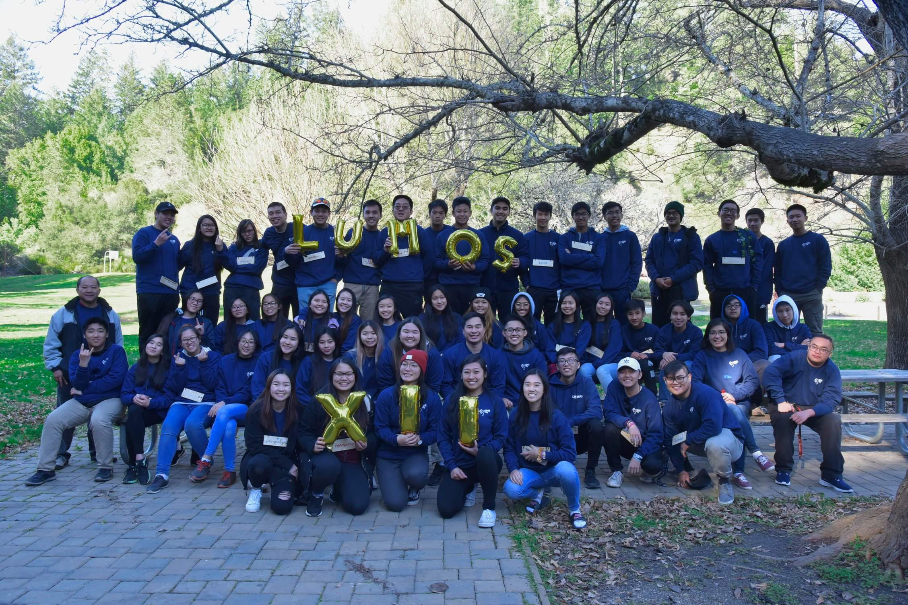
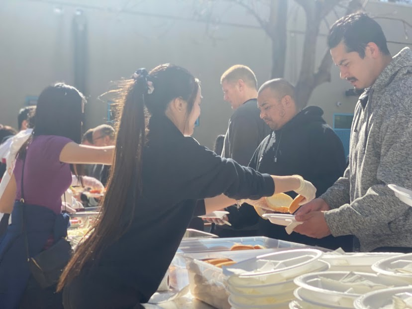
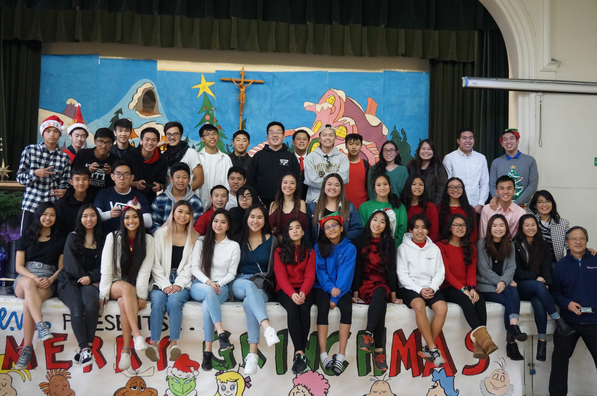
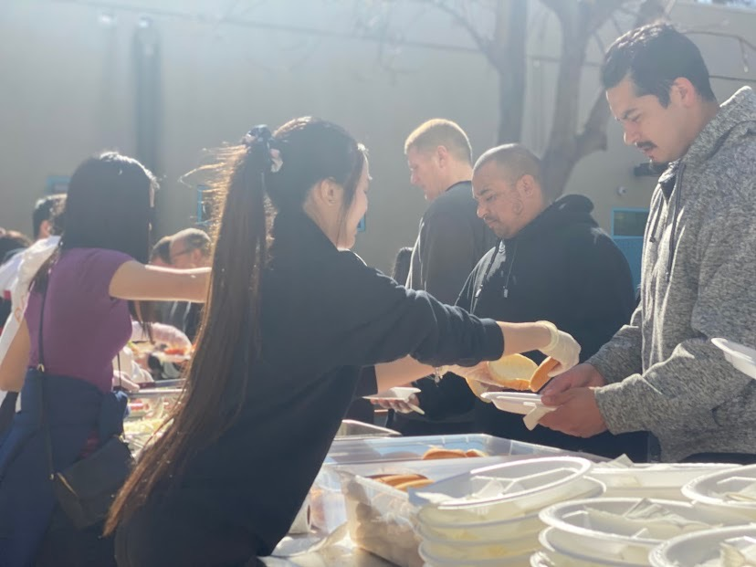
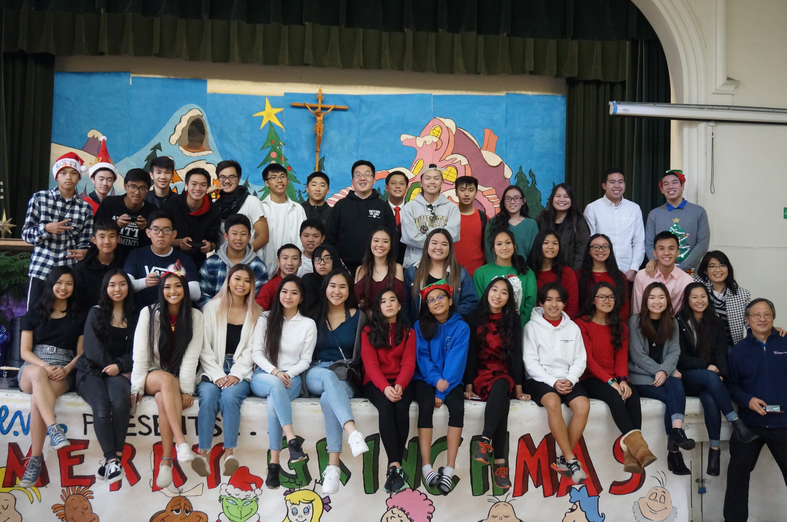

Katherine Tran
Business Operations Manager
Katherine Tran is an undergraduate student currently attending UC Riverside. After four years, she will graduate with a bachelor’s degree for business administration and obtain a Master of Business Administration at another college.
Before college, Katherine was involved in many clubs and organizations that helped develop useful skills that she can apply to her future job. She was an active member of Vietnamese Student Union at Evergreen Valley High School from 2018 to 2020. There, she choreographed and led a group of 24 dancers. Katherine organized spreadsheets and forms to manage the cost of costume design. Additionally, the co-managed annual VSU shows that donate a portion of proceeds to support orphans in third world countries.
Another organization Katherine took part of is called Walden West. It is an outdoor camp that offers 5th and 6th graders the chance to explore nature through hikes and activities while teaching students character growth, independence, and science outside of the classroom. Katherin led as a guidance counselor for 10-15 students in cabins, encouraged students to participate in group activities, accompanied them on hikes, and facilitated discussions in breakout groups. Ultimately, she put her all in her work to ensure everyone had a positive experience at camp.
Experience
Sales Associate
• Trained under District Manager
• Developed social skills by engaging with customers daily
• Practiced suggestive selling to build multiple sales
Leader
• Hosted fundraisers
• Arranged and participaed in volunteer events
Teaching Assistant
• Organized lesson plans
• Hosted and participated in cultural festivals
• Attended seminars and workshops every Sunday
• Mentored new teaching assistants
Education
UC Riverside
Portfolio




 